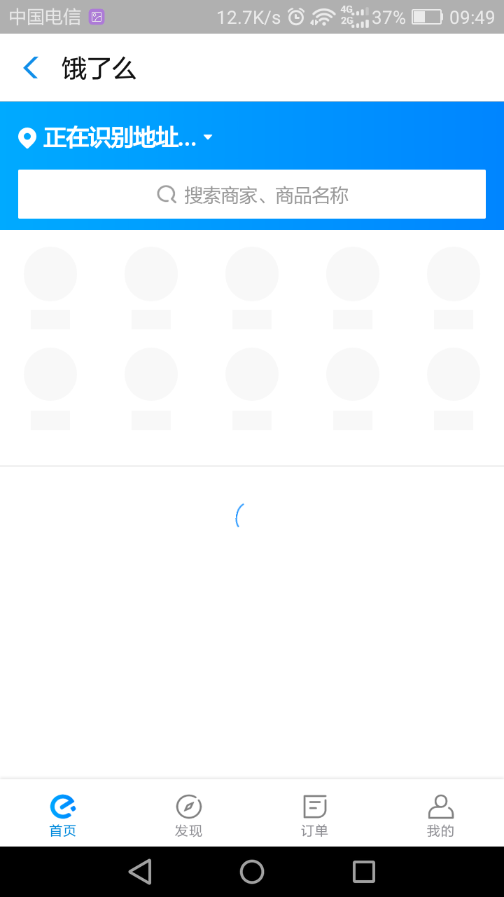

技术实现
和思路分析
BaiJiaWei - @光信1501
开发策略
- 原生开发实现
- 内嵌webview
- Progressive Web App
原生应用和开发
html、css、js
java+安卓api
Object-C/Swift
内嵌webview
- Andriod使用webview控件往APP里内嵌网页
- 在ios中有自己的浏览器组件，他就是UIWebView

什么？还要内嵌浏览器?
宝宝不要！
Progressive Web App
2016年，Google提出了PWA，志在增强Web体验。可显著提高加载速度、可离线工作、可被添加至主屏、全屏执行、推送通知消息……等等这些特性可使Web应用渐进式地变成App，甚至与APP相匹敌。
普通H5和PWA对比
- 可靠：在没有网络的环境中也能提供基本的页面访问，而不会出现“未连接到互联网”的页面。
- 快速：针对网页渲染及网络数据访问有较好优化。
- 融入（Engaging）：应用可以被增加到手机桌面，并且和普通应用一样有全屏、推送等特性。

总结
- 客户端：移动端适配和PWA技术开发APP和网站
- 服务器：NodeJs + MongoDB + swig
- 项目部署：阿里云虚拟服务器（9.9元/月）